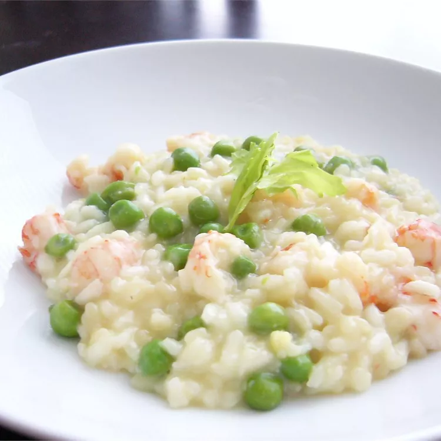

Seafood Risotto

Ingredients
- 2 tablespoons olive oil
- 2 cloves garlic, minced
- 1 cup Arborio rice
- 2 cups low-sodium chicken broth, divided
- 1 cup dry white wine
- ½ pound bay scallops
- ½ pound medium shrimp, peeled and deveined
- 1 cup fresh snow peas, trimmed and halved crosswise
- 1 medium red bell pepper, diced
- 3 tablespoons grated Parmesan cheese
- 2 teaspoons dried basil
- 2 tablespoons lemon juice
- ground black pepper to taste
Directions
- Heat olive oil in a large, heavy-bottomed saucepan over medium-low heat. Add leek and garlic; cook and stir until soft, about 5 minutes. Add rice and cook for 5 minutes more, stirring frequently.
- Pour in 1 1/2 cups chicken broth and bring to a boil over high heat, stirring occasionally. Reduce heat to medium-low and simmer, uncovered, for 5 minutes, continuing to stir occasionally. Pour in remaining chicken broth and wine; increase heat to medium and cook for about 5 more minutes, stirring constantly.
- Add scallops, shrimp, peas, and red pepper. Cook, stirring constantly, until remaining liquid is almost absorbed and seafood has cooked, about 5 minutes. When rice is just tender and slightly creamy, season with Parmesan cheese, basil, lemon juice, and pepper.